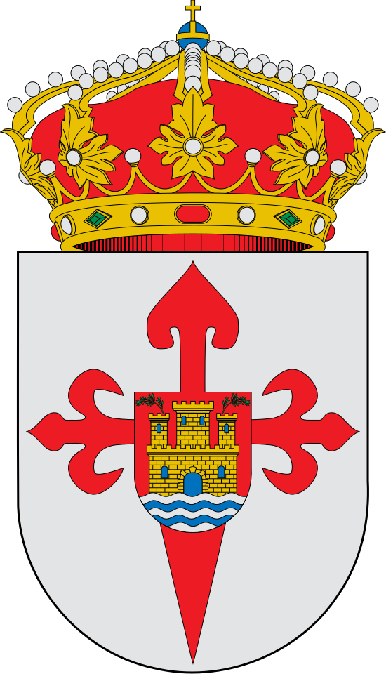

¡Bienvenidos a Casas de Millán!
Casas de Millán es un municipio ubicado en la provincia de Cáceres, en la comunidad autónoma de Extremadura.
Se halla en la zona occidental de la provincia, a medio camino entre las ciudades de Cáceres y Plasencia. Pertenece a la comarca de las Tierras del Marquesado, una zona compuesta por un cordón de sierras de mediana altura, que parten de la Sierra de Miravete y continúan con las de Corchuelas, Serradilla, Mirabel y Cañaveral. El entorno natural del municipio, en las cercanías de los riberos del río Tajo, se incluye en el ámbito de la Reserva de la Biosfera de Monfragüe, donde podemos encontrar bellos paisajes de dehesa y el monte mediterráneo, y donde es posible observar una abundante presencia de aves.
Casas de Millán cuenta con una población aproximada de 560 habitantes. En el núcleo urbano destacan construcciones históricas como su iglesia parroquial, ermitas, y casas señoriales.
En este sitio web, podremos ver una breve historia de la localidad, sus tradiciones y fiestas, sus datos estadísticos e información turística y una serie de recursos, fotos y vídeos para conocerlo más a fondo.
